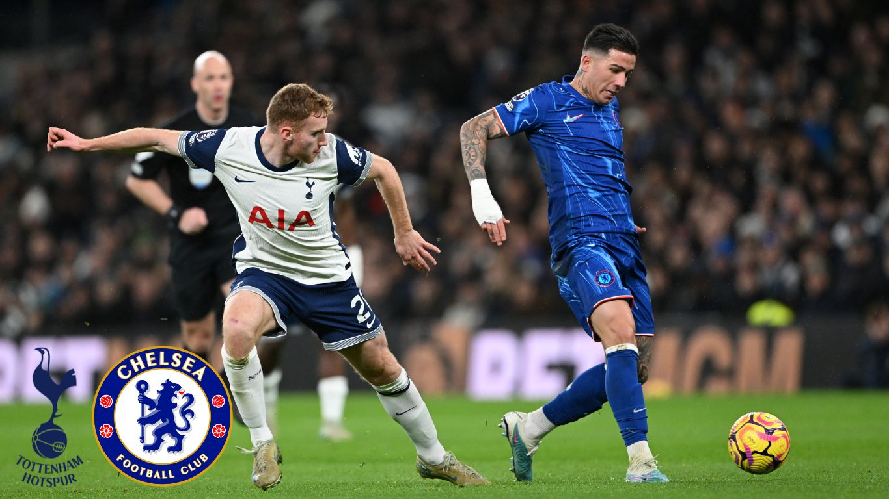
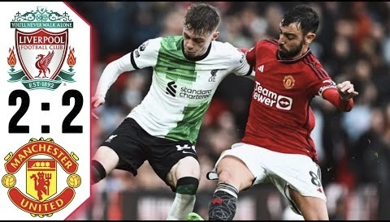

Classic Matches
This page highlights three exciting matches from the 2024/25 Premier League season.

Tottenham 3–4 Chelsea
A dramatic seven-goal thriller with constant momentum swings. Both teams attacked aggressively, creating a match full of big chances and late-game tension.
Why it was memorable
- High tempo from start to finish
- Multiple lead changes kept the game unpredictable
- Late moments decided the final result

Arsenal 5–1 Manchester City
A shocking and dominant performance by Arsenal against the defending champions. The match featured fast attacking football and relentless pressure from the home side.
Why it was memorable
- Five goals scored against a top opponent
- High pressing and quick counter-attacks
- A statement win in the title race

Liverpool 2–2 Manchester United
A classic rivalry match with intensity and high stakes. Both sides showed resilience and responded to pressure, ending in a hard-fought draw.
Match highlights
- Strong atmosphere and high intensity
- Both teams responded quickly after conceding
- A competitive draw that felt like a “big game”